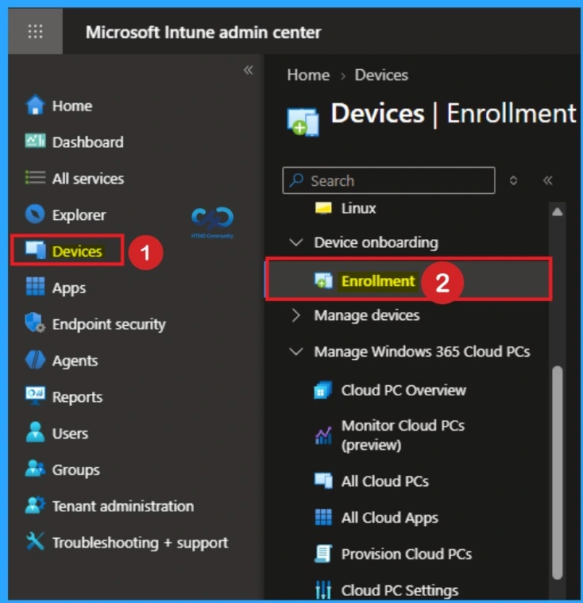
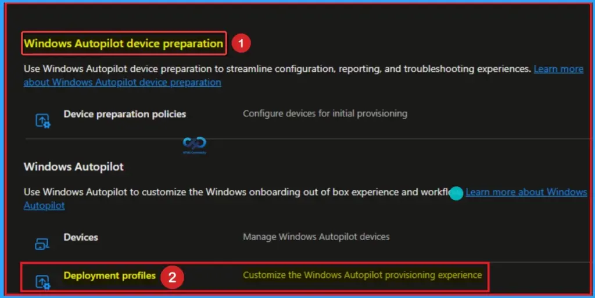
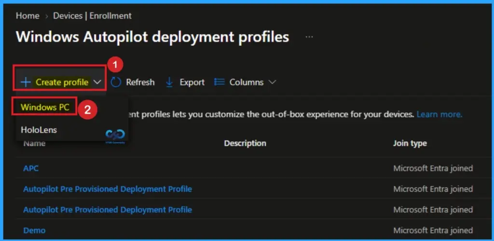
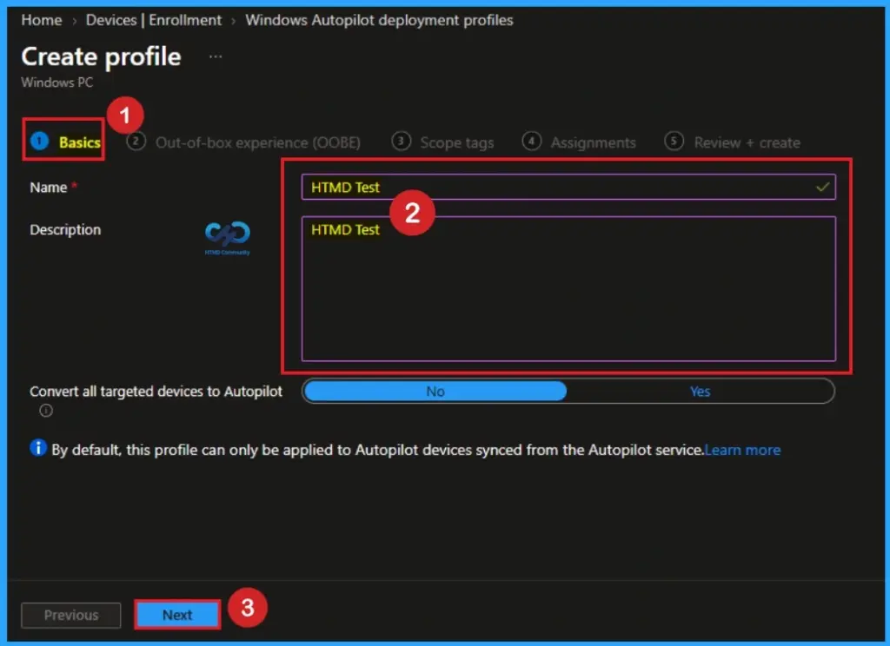
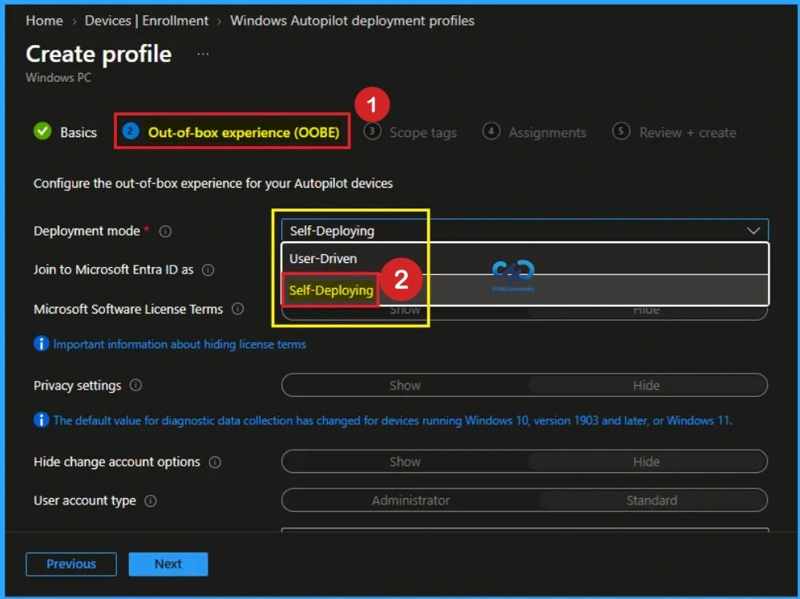
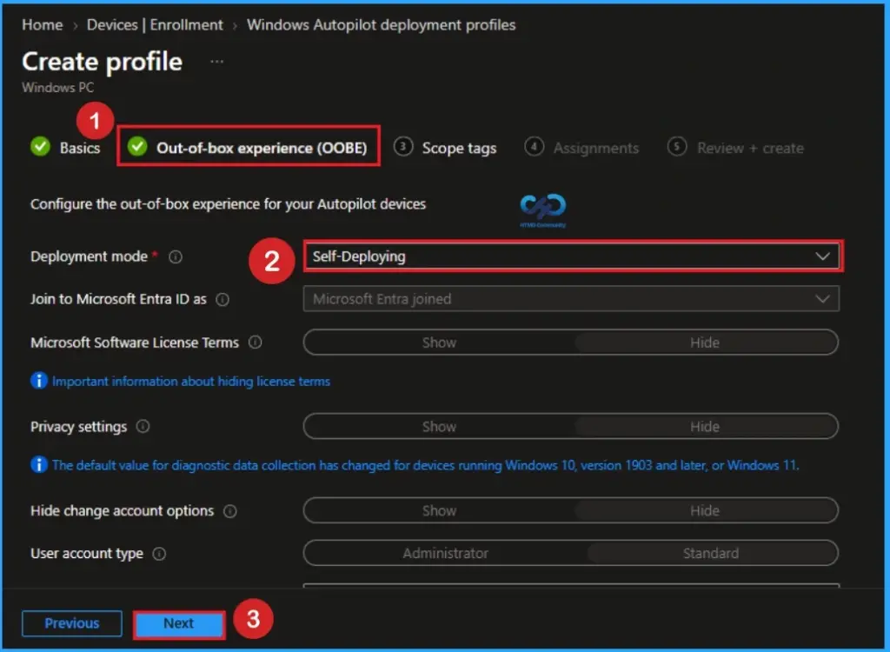
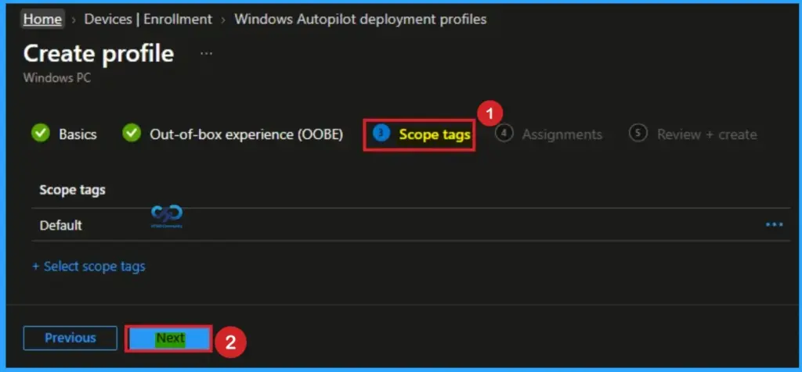
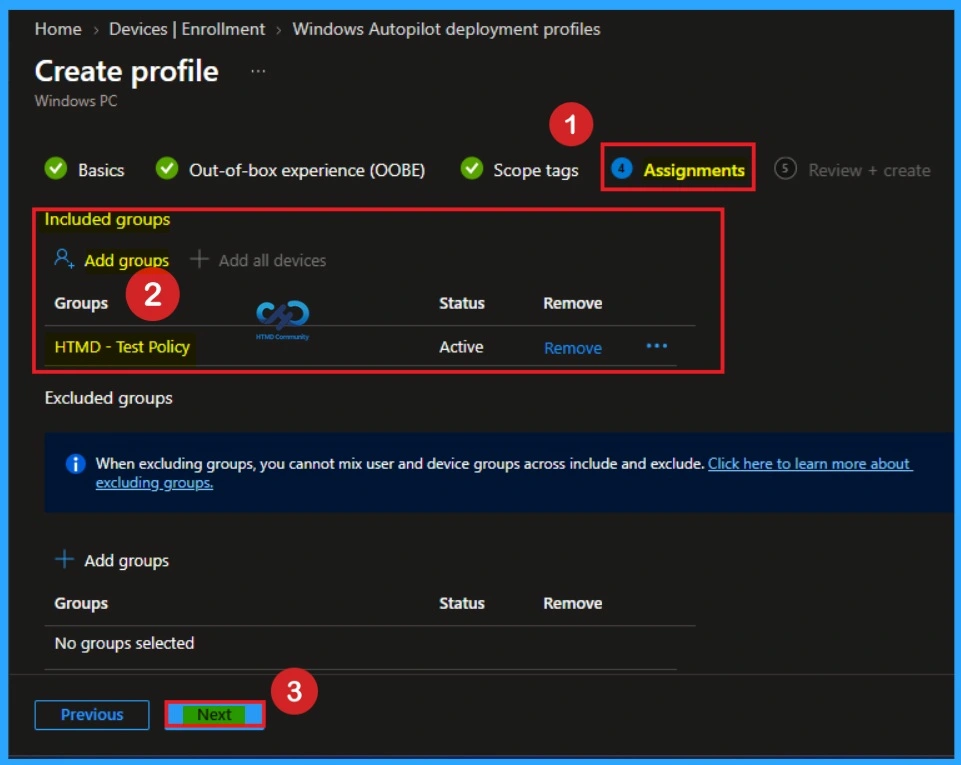
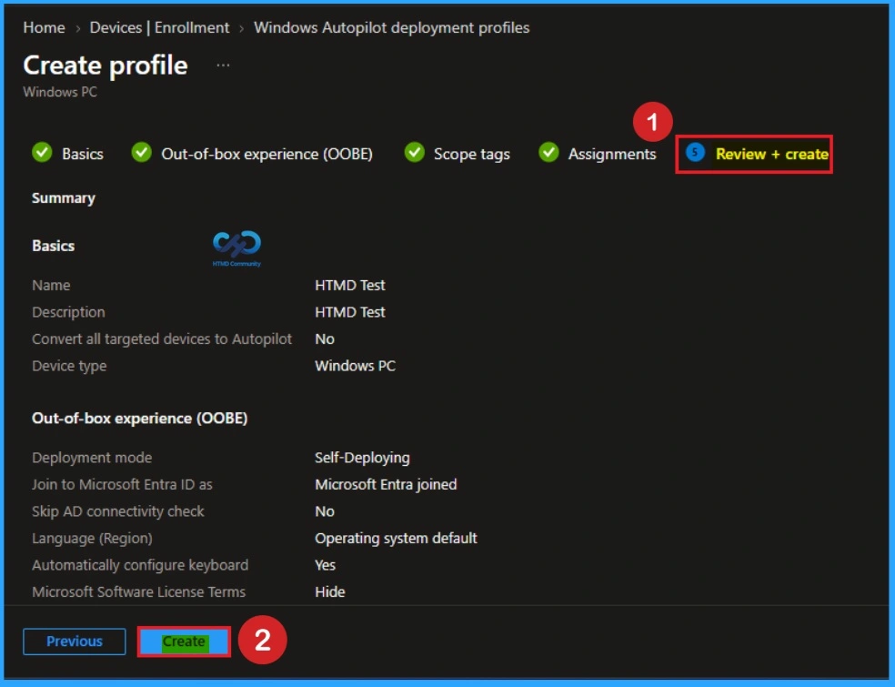

Key Takeaways:
- Microsoft reported problems with Self-Deploying Autopilot Deployment Profiles
- Uses TPM 2.0 hardware for authentication into Microsoft Entra tenants
- Issue Occured on tenants with Intune Service Release 2406
- Self‑deploying mode is still unstable across many tenants
Let’s discuss about Issue with Self-Deploying Autopilot Deployment Profiles on Intune. Microsoft recognized a new problem with Self-Deploying Autopilot Deployment Profiles on several tenants with the latest Intune service Release 2406. This issue is still occurring and but it has shifted in nature.
Table of Contents
Issue with Self-Deploying Autopilot Deployment Profiles on Intune
As you know, Windows Autopilot’s self-deploying mode allows a device to be deployed with minimal user interaction. Self-deploying mode uses a device’s Trusted Platform Module (TPM) 2.0 hardware to authenticate the device into an organization’s Microsoft Entra tenant.
The self-deployment feature in Autopilot is very convenient for users in Microsoft Intune. So, most users prefer self-deployment mode for Autopilot Deployment Profiles. However, users face many issues with deployment profiles in several tenants on service release 2406.
Steps in Issue with Self-Deploying Autopilot Deployment Profiles on Intune
To access Self-Deploying in Autopilot Deployment in Intune, we must log into the Microsoft Intune admin center. When self-deploying mode is used, only compliance policies targeting the device are applied. It is straightforward to access Self-Deploying Autopilot Deployment.

After selecting Enrollment, you can choose Windows Autopilot device preparation. Here you can see Deployment profiles. It helps you to customize the Windows Autopilot provisioning experience Look at the below screenshot.

On the Windows Autopilot deployment Profiles, Click on the + Create Profile button. It useful for Kiosks, digital signage, shared or user less devices. Then choose Windows PC. Look at the below screenshot for more clarity.

Basic Tab
After clicking on the Create Profile button, you will get a new window for Profile Creation. Here, you can enter the Name and Description. I entered HTMD Test as the Name and Description. Then click on the Next button.

Out-of-Box Experience (OOBE)
After that, you will get the Out-of-box Experience (OOBE) tab. Here, you can select the Deployment mode. Two options are provided: Deployment mode and Self-Deployment. Devices with this profile aren’t associated with the user enrolling the device. User credentials aren’t required to enroll the device. When a device has no user associated with it, user-based compliance policies don’t apply to it.

After selecting Self-Deployment as Deployment mode, an issue occurred. I will get a window showing, “This page is having a problem“. You can open a new tab or refresh this page to resolve this issue. Click on the Refresh button from the below screenshot.
After referring, you can repeat the above process on profile creation, such as + Create Profile and adding primary sections. After that, select the Self-Deployment option as Deployment and Select Microsoft Entra hybrid join. After that, you can continue the Self-Deploying process on Windows Autopilot.

Adding Scope Tags
Scope tags have no required role in this configuration, so you can skip this section by clicking Next. Scope tags are used for role-based access and organizational control, but they are not necessary in this case. Skipping this step will not affect the functionality of the Self-Deployment.

Assignments
The Assignments section is very important because it allows you to add groups to the policy. Here, you can select the appropriate organizational group. After selecting the group, click Next to proceed. Always remember to add groups only from the “Include” section to ensure the policy is applied correctly.

Review + Create Tab
Before completing the Self-Deployment creation, you can review each tab to avoid misconfiguration or policy failure. After verifying all the details, click on the Create Button. After creating the policy, you will get a success message.

Different Issues of Self Deployment
Self‑deploying mode is still unstable across many tenants, especially in kiosk/shared device scenarios. Microsoft is actively documenting these problems and providing workarounds, but a permanent fix is not yet fully rolled out.
Possible Workarounds and Recommendations
You can Check MDM enrollment settings in Microsoft Entra to ensure only Intune is configured as the MDM authority. Validate TPM firmware and BIOS updates, because outdated firmware often causes attestation failures.
Another method is Pilot test deployments to retry on one device after cleaning tenant settings or updating firmware. Fallback option helps to Use user‑driven or hybrid join profiles if self‑deploying mode blocks critical rollouts.
Need Further Assistance or Have Technical Questions?
Join the LinkedIn Page and Telegram group to get the latest step-by-step guides and news updates. Join our Meetup Page to participate in User group meetings. Also, join the WhatsApp Community and the WhatsApp channel to get the latest news on Microsoft Technologies. We are there on Reddit as well.
Author
Anoop C Nair is a Workplace Technology solution architect with 25+ years of experience. Microsoft Certified Trainer. Microsoft MVP from 2015 onwards for consecutive 11+ years! He is a blogger, Speaker, and Founder of HTMD Community and HTMD Conference. His main focus is on Device Management technologies like Intune, Windows, and Cloud PC. He writes about technologies like Intune, SCCM, Windows, Cloud PC, Entra, and Microsoft Security.